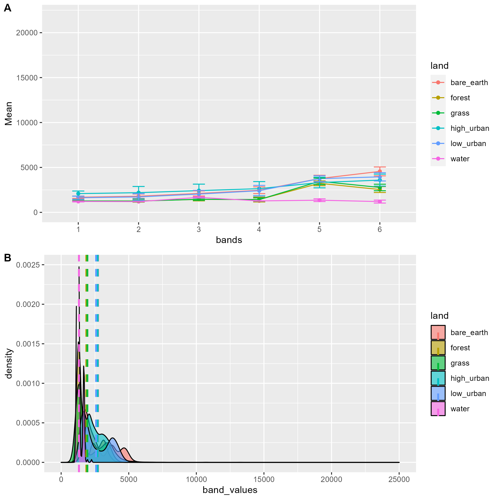

1 Introduction
1.1 Summary
1.1.1 Sensors
| Passive | Active | |
|---|---|---|
| Attribute | Sun energy reflection in EM wave, don’t emit EM waves | Emit and receive EM wave / energy |
| Example | human eyes, satellite (e.g. Wk2 sensor summary - WorldView-3) | radar, x-ray, LiDAR |
| ❌ | Influenced by atmosphere Haze (require atmosphere correction, no haze in outer space due to no atmosphere) and scattering (wavelength (e.g. blue sky and orange sunset)), clouds and weather | |
| ✔️ | does not disturb the object or area of interest | can pass clouds | | ||
1.1.2 Four resolutions
Spatial
the size of the raster grid per pixel (e.g. 20cm or 30m)
Low spatial resolution: fast (short revisit time); High spatial resolution: costly
Spectral
Spectral signature (EM): Objects on Earth have difference wavelengths = Bands
Multi-spectral data / image
Hyperspectral data / image: stack all colour bands
True colour (human eye can see) and false colour (human cant see)
❌ atmospheric window (atmospheric transmission / opacity, e.g. water vapour, ozone, CO…)
Spectroradiometer
Radiometric
identify differences in light or reflectance, in practice this is the range of possible values.
Increase bit -> increase possible values
8-bit sensor: 0-255; 11-bit sensor: 0-2047
Sentinel-2 is 12-bit (brightness levels from 0 – 4095) (beyond True Colour Image (TCI) values)
Temporal
Revisit time of sensor
High resolution / pixel -> low revisit = low cost and number [graph]
Trade off between resolution and time (and cost)
1.1.3 Practical
Overview/Workflow (SNAP):
Download -> New project in SNAP -> Save downloaded file in a Data folder in the same directory as the project -> Open product/zipped data -> Select RGB-image channel (on product explorer panel right click product) => Fig. a,b,c
To inspect/change image display: -> Colour Manipulation panel (View -> Tool Windows) -> Change the range of histogram
To analyse spectral feature space: -> Scatter plot (under Analysis tab) => Fig. d
To mask the study area: -> Resampling to 20m (since both masking and the Tasseled Cap function require same resolution while B2/B3/B4/B8 are 10m and B11/B12 are 20m) -> Import vector (ESRI shapefile) -> Select the imported layer in layer manager -> Masking under Raster - Masks - Land/Sea Mask (select bands that would be used)
To reduce dimensionality via Tasseled Cap transformation : -> Apply transformation functions in Band Math -> Select RGB-image channel => Fig. e,f
Since Landsat has different spatial resolution than Sentinel, the latter will be resampled again (upscale). And since the Sentinel data has been masked/selected useful bands for Tasseled cap, it will be masked again to select B1-B7.
To compare spectral reflectance: -> Make sure both data in the same resolution with the same bands -> Add polygons by land cover -> Export polygons as shapefiles -> Export both dataset as GeoTIFF -> Check in QGIS -> Compare in R using terra (or stars) => Fig. g,h & Table 1
1.1.3.1 Sentinel and Landsat
- Data availability depends on cloud cover, time, weather (sometimes study area may not have data under the filtered criteria)
- Sentinel tends to have shorter download time than Landsat.
- Landsat has less available data in a given time range (due to slightly longer revisit time).
| Sentinel-2 | Landsat (8-9 Operational Land Imager (OLI) and Thermal Infrared Sensor (TIRS)) | |
|---|---|---|
| Spatial resolution | Resolutions varied for each bands. (E.g. 10m resolution for Band 2) | 30m resolution |
| Temporal resolution | 10 days (5 days for combined constellation 2A & 2B) | 16 days |
| Spectral resolution | 13 spectral bands | 9 spectral bands |
| Central wavelength | B1 443nm = Band 1 has central wavelength of 442 nm | |
| Process by Software | QGIS | SNAP |
| Colour composite | merge the BOA bands (B2, B3, B4, B8) to make true colour composite (B1=Blue, B2=Green, B3=Red) | recreate by changing RBG channels (Fig. a, b, c) |
| Enhancement | Contrast enhancement | Image histogram |
| Spectral feature space | Scatter plot (Fig. d) | |
| Resampling | B11 and B12 are at a 20m resolution whereas all the others at a 10m resolution. -> resample others to 20m (upscale) Sentinel 2 resampling toolbox | |
A) Traditional resample: considers the neighbouring pixels (time-efficient?) B) Sentinel 2 products resample: account for the particularities of the angle (satellite viewing) bands |
||
| Masking | Masks. Land/sea mask. Can only mask bands on the same resolution |
|
| Tasseled Cap function | Band Maths. Reduce dimensionality: (similar to PCA) spectral index combining two or more bands to highlight certain features of an image. Then change RGB channel to those new data to show results (Fig. e) |
1.1.3.2 Masking vs. cropping
masking: the outline of the geo boundary
cropping: to the extent, the rectangular parameter of the geo boundary
1.1.3.3 Example: Processing of Sentinel and Landsat data of Kinmen County
I’ve chosen Kinmen County in Taiwan as my case study area for practical. It consists of several islands and is in close proximity to Xiamen, China. The main/largest island is the H-shaped one at the lower end of the first few maps (or see Fig. e).
This is where i spent the majority of summer in 2022 so i’ve got some knowledge of the city/island’s land use. I also cycled a lot on this island (so having some sense of the topography). It is really enjoyable to cycle here as there is less traffic and more greenery. However, it tends to be slightly cloudy/rainy in certain months which may constrain the analysis. Anyhow, let’s see how it goes.
1.1.3.3.1 Sentinel
The initial exploration using Sentinel data:

False colour composite: B8, B4, B3. Plants reflect near-infrared and green light whilst absorbing red.
Atmospheric penetration composite: B12, B11, B8A with no visible bands to penetrate atmospheric particles. Vegetation = blue, urban area = white, gray cyan or purple.
Basically, Fig a,b,c show that the coastal city Xiamen’s built-up areas are mostly close to the seashore. This is mainly due to its historical ports that are open to international trades and thus becoming more urbanized. Kinmen Islands are less populous compared to Xiamen and the majority of land is bare soil / vegetation. Fig d shows that the dry bare soil is prominent in some areas (black dots at high B4 and high B8), while the image has large ratio of biomass (yellow peak at low B4 and high B8).
1.1.3.3.2 Tasseled Cap function
ArcPro’s explanation:
The function is originally designed to monitor crop’s life cycle / changes through time.
Brightness = bare or partially covered soil, man-made, and natural features such as concrete, asphalt, gravel, rock outcrops, and other bare areas
Greenness = green vegetation
Wetness = soil moisture, water, and other moist features.
✔️ Those three components of imagery contain about 97% of the meaningful information available in the image (removing noise and atmospheric effects).

(Darker) blue and red areas are generally unchanged - representing water (lakes/reservoir/sea), soil and built-up area. The pink areas are built-up areas / concrete / asphalt / human-made (e.g. southern inner bay’s long linear shape is the airport, and western area on the main island is the most populous town)
Greenness in Fig. e is less than that in Fig. f, indicating the vegetation is less in May. During May (or generally spring time), there should be roughly similar amount of vegetation / crops, compared to November (autumn), while the crops during autumn reach maturity leading to more greenness in the latter figure.
It might also be the case that the light blue areas are soil moisture / higher humidity. As can be seen from both figures, the shaded blue areas in the central/slightly eastern-central location of the largest island is mountainous. The humidity can be higher there.
Another difference between the two images is that the redness is more intense in the first figure (more NIR?), while more organgy in the second. This indicates that the those areas are soil or bare areas. During autumn, the vegetation on those land increase, so the yellowness/greenness overlays.
1.1.3.3.3 Landsat
To mitigate the atmospheric effects (cloudy and foggy from April to May and rainy during summer) (and also due to data availability), the sensing time for Landsat is in December.
1.1.3.3.4 Compare spectral reflectance


The ranges of the datasets are different visually. Landsat has higher mean reflectance for all land cover in all bands.
For both sensors, the relationship between each land cover is similar, with water, forest and grass having lowest reflectance, and albeit less visible in Sentinel, bare earth having highest reflectance.
Then, t-test is conducted to test the difference in average of the land cover reflectance between two sensors.
| landcover | t | df | p-value |
|---|---|---|---|
| low_urban | -129.55 | 2224.5 | < 2.2e-16 |
| high_urban | -289.79 | 7115.3 | < 2.2e-16 |
| bare_earth | -223.36 | 7141.2 | < 2.2e-16 |
| grass | -71.533 | 674.71 | < 2.2e-16 |
| forest | -256.12 | 7799.9 | < 2.2e-16 |
| water | -175.3 | 270.91 | < 2.2e-16 |
Since p-values are all below 0.05, the difference in average reflectance of Landsat and of Sentinel data is statistically significant.
Fig. i from NASA shows that spectral bands are similar between Landsat 8 and Sentinel-2, except TIRS. Hence, the comparison above is possible. However, the atmospheric transmission varies. Sentinel bands have higher atmospheric transmission rate (white areas) and relatively low reflectance across all land cover type. Conversely, most Landsat bands are in atmospheric windows (gery areas), which allow energy to pass through the atmosphere, thus resulting in higher reflectance.
{kind=link}
1.1.3.4 QGIS vs. SNAP
QGIS:
- easy to check stuff / visualize outputs
SNAP: pre-processing and analysing remotely sensed / raster data. For sentinel and other sensors comparison
- Easier to recreate TCC
- Can manually set the histogram / contract enhancement as in QGIS
- Having data from multiple sensors in the same software that can be explored together
- but it’s a pain to reopen a project.. and I found when setting up the project, it’s more straightforward to create a new project before opening up a product.
Two software can work together (using QGIS to check everything as did in CASA0005).
- when i checked GeoTIFFs and shapefiles in QGIS, nothing is shown.. so probably something went wrong when selecting POIs.
1.1.4 Questions
why in the practical book before Landsat when resampling Sentinel, the equation for brightness does not include B11 and B12 (but using 0.5082 and 0.1863)?
A: It should be B11 and B12.
Fig e looks different in terms of colour scheme? Since the majority of the city is coloured in blue, what do the blueish areas represent/mean (physically those areas are vegetations/forests, shouldn’t those be in green)?
A: It depends on the colour gun set by the RGB.
1.2 Application
One more question would be what possible factors contribute to the difference in mean reflectance analysed above and how to mitigate the difference. Apart from the atmospheric window discussed above, the temporal difference in the sensing date (19th November 2022 for Sentinel and 19th December 2022 for Landsat) might contribute to difference in atmospheric effects and in path radiance / noise from sky irradiance and radiance from surrounding areas. Hence, to increase data consistency and reduce reflectance difference for similar sensors, removing atmospheric effects and noise is needed this could be done through linear regression methods (e.g. to get surface reflectance for Sentinel using radiometric calibration method) (see Week 3). Moreover, Time-series-based Reflectance Adjustment (TRA) approach is developed to mitigate the drawbacks of fixed/global band transformation coefficients by considering difference in land cover type and locations (Shang and Zhu 2019a).
However, if just using one sensor for analysis, there would be no/less concerns on the consistency issue?
1.3 Reflection
There are so many wrong decisions made when producing this analysis. And without solid understanding of concepts/theories, the practical is like a maze üëæ. It would be more efficient to do the practical after fully understanding every concept and data (although it is also rewarding to discover and learn from mistakes..). For instance, when comparing the spectral reflectance of Landsat and Sentinel, i selected band 1 to 7 for both sensors at first. However, after reading the paper by Shang and Zhu (2019b), i realized the wavelengths ranges/band numbers are different for both sensors (e.g. NIR is band 5 in Landsat while 8A for Sentinel.) After modifying this mistake, the overall patterns do not change much, albeit slight difference in t-statistics.